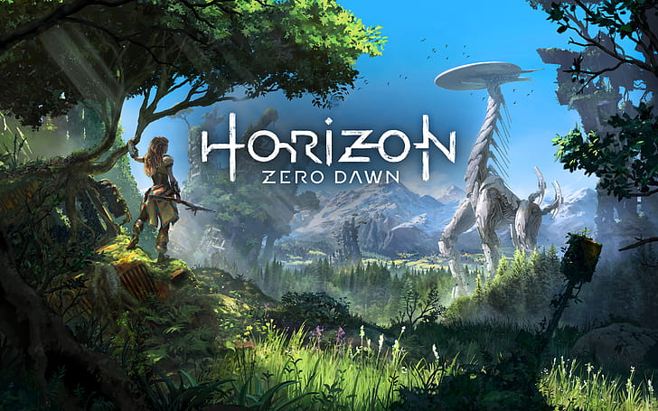
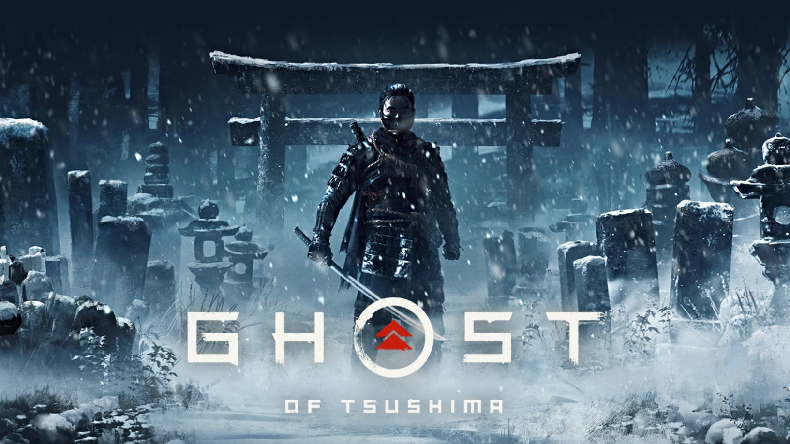
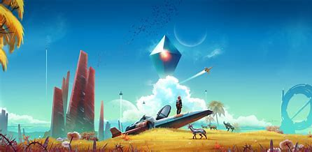
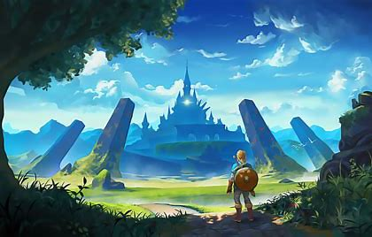

Open world
Open world peleissä pelaaja saa rauhassa koluta läpi luotua maailmaa. Liikkuminen on vapaampaa ja usein tämän tyyppisissä peleissä on paljon sivutehtäviä tarinan suorittamisen lisäksi.
Open world video
Avaa videoPutki
Jotkin pelit eivät mahdollista vapaata liikkumista pelimaailmassa. Tämän tyyppisiä pelejä voidaan kutsua putkinäkö peleiksi. Tällöin pelaajan pitää liikkua, kuin putkessa eli eteenpäin, jotta peli etenee. Tällainen peli on esimerksiksi kuvassa oleva The last guardian peli.
Hyödyt
Videopelien pelaamisesta on huomattu hyötyjä. Moni saa kaverisuhteita videopelien kautta. Englannikielen taito karttuu. Myös Aalto-yliopisto on lähtenyt kehittämään peliä, joka voisi auttaa nuoria mielenterveyden haasteiden parissa.
Haitat
Pelaamisella on myös haitta puolensa. Tämä voi vähentää liikkumista. Naamatusten käytävä sosiaalisuus saattaa niukentua. Sekä huonossa asennossa pelaaminen voi vaikuttaa ryhtiin.

